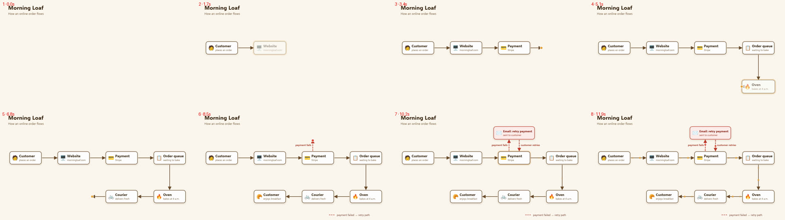

Claude Code with no animation tool (the control)
Animation test, 2026-11-18 · Animated diagrams · driven by Claude Code (Claude Opus 5.5) in a throwaway sandbox
The brief: An animated diagram of an online order: seven steps from customer to courier in order, a dot travelling along each arrow, and a failed-payment branch that loops back. Full brief →
What was checked
- ✓ all 7 steps
- ✓ in order
- ✓ dots travel
- ✓ retry branch
- ✓ loops back
- ✓ labels readable
The recording: 1920 x 1080, 30.0 fps, 12.0 s. Judge (gpt-6-astra, 8 frames): follows the brief 5/5, looks 4/5.
Time 1.4 min (installing the tool included) · 7 turns · $0.28 at API prices · files: index.html, preview.mp4
The 8 frames the judge saw

The agent's last words
the diagram from the start. Some wording is my own: each box has a one-line caption, for example "places an order" and "enjoys breakfast", and there's a "Morning Loaf / How an online order flows" title. The input folder was empty, so the bakery has no logo or brand colours; I used a warm brown and gold palette. Two small things in the stills: while an arrow is still being drawn, its moving dot slightly overlaps the arrowhead. On the "customer retries" arrow, the dot also briefly passes close to the label. DELIVERABLE: /home/runner/work/output/index.html, /home/runner/work/output/preview.mp4